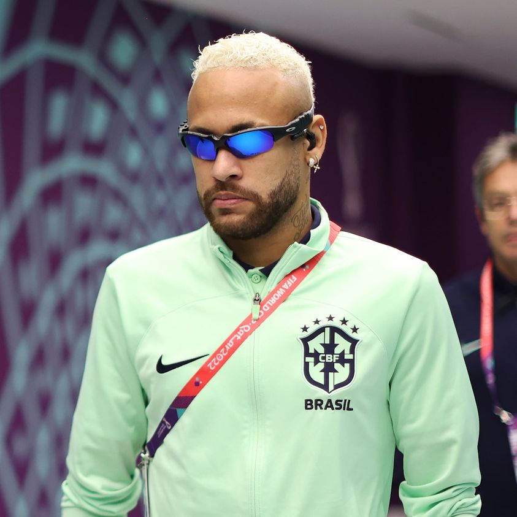

Vinicius Guimarães
Me chamo Vinicius Guimarães, tenho 23 anos, sou natural de Macapá-Amapá e atualmente estudante de Ciência de dados na Estácio, mas já cursei medicina por 3 anos.
Me identifico com a área da computacional desde criança, sempre tive curiosidade no aprendizado de novas tecnologias e aperfeiçoar o conhecimento já existente.
O curso +Devs2Blu veio como uma verdadeira surpresa visto que na minha cidade o investimento tecnológico e pessoal é escasso e distante, apesar disso, busque caminhos alternativos para alcançar meus objetivos.
Não me imagino em uma vida onde as coisas simplesmente acontecem, onde o tempo passa e não há mudanças, meus espírito de explorador não me permite ter uma vida medíocre.